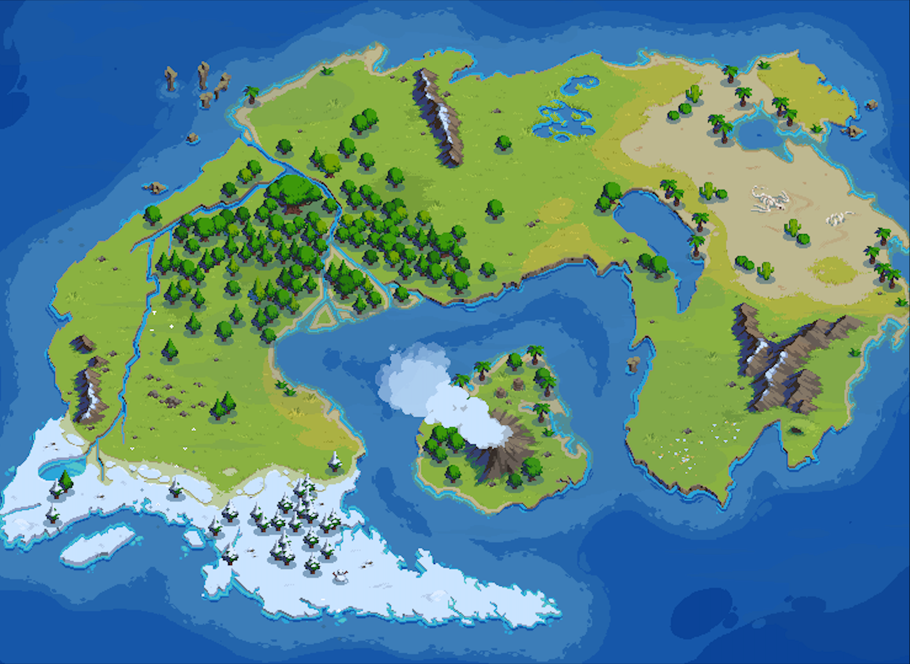

<!-- <!DOCTYPE html>
<html>
	<head>
		<title>Application App</title>
		<meta charset="utf-8" />
		<link rel="stylesheet" href="style.css">
		<script src="js/jquery-3.3.1.min.js" defer></script>
		<script type="text/javascript" src="js/imageMapResizer.min.js" defer></script>
		<script src="main.js" defer></script>
		<link id="page_favicon" href="favicon.ico" rel="icon" type="image/x-icon"/>
	</head>

	<body>
		<div>
			<div id="map_div">
-->
				<!-- Image Map Generated by http://www.image-map.net/ -->
				<!-- 

				<map name="image-map">
				    <area target="" alt="" title="" href="challenges/challenge1.html" coords="381,929,764,1277" shape="rect">
				    <area target="" alt="" title="" href="challenges/challenge2.html" coords="1097,320,1672,569" shape="rect">
				    <area target="" alt="" title="" href="challenges/challenge3.html" coords="2034,469,2438,827" shape="rect">
				    <area target="" alt="" title="" href="challenges/final.html" coords="1448,1261,282" shape="circle">
				</map>
			</div> -->

			<!-- <audio controls autoplay>
			  <source src="nature_sound.mp3" type="audio/mpeg">
			</audio> -->
<!-- 		</div>
	</body>
</html> -->


<!DOCTYPE html>
<html>
  <head>
    <script src="p5/p5.min.js"></script>
    <script src="p5/addons/p5.dom.min.js"></script>
    <script src="p5/addons/p5.sound.min.js"></script>
    <link id="page_favicon" href="favicon.ico" rel="icon" type="image/x-icon"/>
    <style> body {padding: 0; margin: 0;} </style>
  </head>

  <style>
  	canvas {
	  display: block;
	  margin: auto;
	  margin-top: 20px;
	}
  </style>
  <body>
  	<script src="sketch.js"></script>
  </body>
</html>


